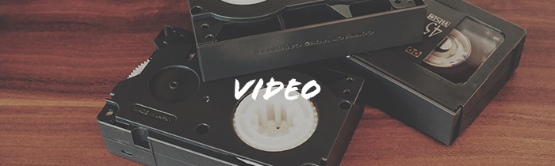

Portfolio
これまでに撮影した写真や映像作品を掲載しています。
SNAPPERSでは「街-City」「海-Beach」 「森 - Forest」の３つの場所で, 様々な角度から 「人の気配」を撮影します。人が写っていない写真のなかにも確かにそこにある、人の気配を感じ取っていただけると嬉しいです。 詳しくみる >>

SNAPPERSでは映像作品も撮影しております。ドローンでの空撮やアクションカメラを使用した、野外でのダイナミックな映像を得意としています。 またショートフィルムを映画祭などで上映することもあります。 詳しくみる >>